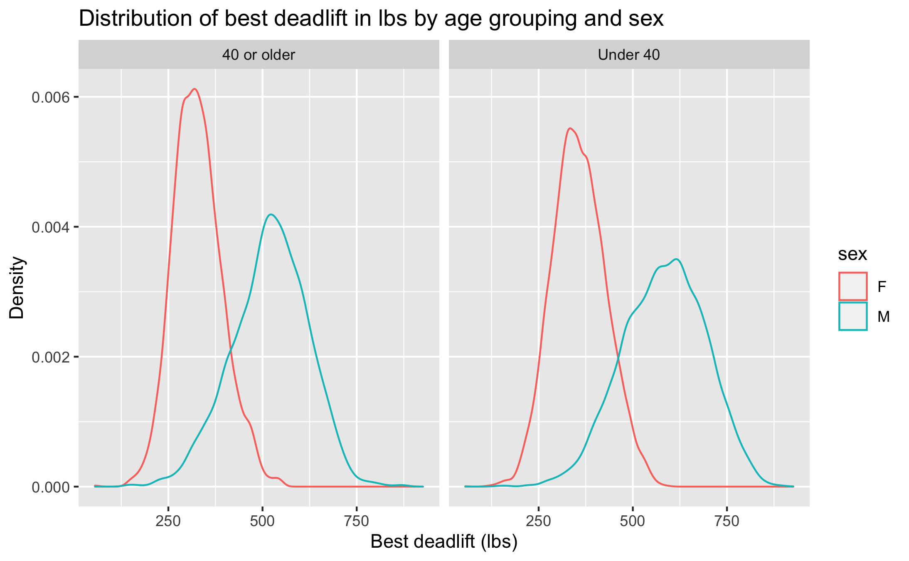

download.file("https://sta101-fa22.netlify.app/static/labs/lab03_template.qmd",
destfile = "lab03.qmd")Lab 03: Do you even lift?
Due Thursday September 22 at 11:59pm
By the end of this lab you will
- create and fit univariate regression models
- visualize a simple regression model
Getting started
1. Download the lab template by pasting the code below in your console:
2. Under the “Files” tab on the right hand side, click on lab03.qmd to open the lab template.
3. Complete the exercises below using the space provided.
Warm up
Be sure to update the YAML at the top of the document to include your name and the date.
Packages
Today we will use our standard tidyverse together with tidymodels for regression modeling.
library(tidyverse)
library(tidymodels)Data
Load the data:
ipf = read_csv("https://sta101.github.io/static/labs/data/ipf_lifts.csv")Today, we will be working with data from www.openpowerlifting.org. This data was sourced from tidy tuesday and contains international powerlifting records at various meets. At each meet, each lifter gets three attempts at lifting max weight on three lifts: the bench press, squat and deadlift. The data dictionary for this dataset from tidytuesday is reproduced below:
Dictionary
| variable | class | description |
|---|---|---|
| name | character | Individual lifter name |
| sex | character | Binary gender (M/F) |
| event | character | The type of competition that the lifter entered. Values are as follows: - SBD: Squat-Bench-Deadlift, also commonly called “Full Power”. - BD: Bench-Deadlift, also commonly called “Ironman” or “Push-Pull” - SD: Squat-Deadlift, very uncommon. - SB: Squat-Bench, very uncommon. - S: Squat-only. - B: Bench-only. - D: Deadlift-only. |
| equipment | character | The equipment category under which the lifts were performed. Values are as follows: - Raw: Bare knees or knee sleeves. - Wraps: Knee wraps were allowed. - Single-ply: Equipped, single-ply suits. - Multi-ply: Equipped, multi-ply suits (includes Double-ply). - Straps: Allowed straps on the deadlift (used mostly for exhibitions, not real meets). |
| age | double | The age of the lifter on the start date of the meet, if known. |
| age_class | character | The age class in which the filter falls, for example 40-45 |
| division | character | Free-form UTF-8 text describing the division of competition, like Open or Juniors 20-23 or Professional. |
| bodyweight_kg | double | The recorded bodyweight of the lifter at the time of competition, to two decimal places. |
| weight_class_kg | character | The weight class in which the lifter competed, to two decimal places. Weight classes can be specified as a maximum or as a minimum. Maximums are specified by just the number, for example 90 means “up to (and including) 90kg.” minimums are specified by a + to the right of the number, for example 90+ means “above (and excluding) 90kg.” |
| best3squat_kg | double | Maximum of the first three successful attempts for the lift. Rarely may be negative: that is used by some federations to report the lowest weight the lifter attempted and failed. |
| best3bench_kg | double | Maximum of the first three successful attempts for the lift. Rarely may be negative: that is used by some federations to report the lowest weight the lifter attempted and failed. |
| best3deadlift_kg | double | Maximum of the first three successful attempts for the lift. Rarely may be negative: that is used by some federations to report the lowest weight the lifter attempted and failed. |
| place | character | The recorded place of the lifter in the given division at the end of the meet. Values are as follows: - Positive number: the place the lifter came in. - G: Guest lifter. The lifter succeeded, but wasn’t eligible for awards. - DQ: Disqualified. Note that DQ could be for procedural reasons, not just failed attempts. - DD: Doping Disqualification. The lifter failed a drug test. - NS: No-Show. The lifter did not show up on the meet day. |
| date | double | ISO 8601 Date of the event |
| federation | character | The federation that hosted the meet. (limited to IPF for this data subset) |
| meet_name | character | The name of the meet. The name is defined to never include the year or the federation. For example, the meet officially called 2019 USAPL Raw National Championships would have the MeetName Raw National Championshps. |
Exercises
For all of the following exercises, you should include units on axes labels, e.g. “Bench press (lbs)” or “Bench press (kg)”. “Age (years)” etc. This is good practice.
Let’s begin by taking a look at the squat powerlifting records. To begin, remove any observations that are negative for squat. Next, create a new column called
best3_squat_lbsthat converts the record from kg to lbs (you may have to google the conversion). Save your data frame asipf_squat.Using
ipf_squatfrom the previous exercise, create a scatter plot to investigate the relationship between squat (in lbs) and age. Age should be on the x-axis. Add a linear trend-line. Be sure to label all axes and give the plot a title. Comment on what you observe.Write down the full linear model to predict lift squat lbs from age in \(x\), \(y\), \(\beta\) notation. What is \(x\)? What is \(y\)? Next, fit the linear model. Re-write your previous equation replacing \(\beta\) with the numeric estimates. This is called the “fitted” linear model. Interpret each estimate of \(\beta\). Are the interpretations reasonable?
Building on your
ipf_squatdata frame, create a new column calledage2that takes the age of each lifter and squares it. Save your data frame with an appropriate name. Next, plot squat in lbs vsage2and add a linear best fit line. Does this model look like it fits the data better?One metric to assess the fit of a model is the correlation squared, also known as \(R^2\). Fit the age\(^2\) model and save the object as
age2Fit. Subsequently run
glance(age2Fit)$r.squaredto examine the \(R^2\). Compare \(R^2\) of the age\(^2\) model to the model from exercise 3. Which has a higher \(R^2\)?
Note
\(R^2\) values range from 0 to 1. Values close to 0 means weak correlation between the variables whereas \(R^2 = 1\) implies perfect correlation. You can (optionally) read more about \(R^2\) in section 7.2.5 of the book. We’ll pick up here in the next class.
- Recreate the plot below. Make sure axes and title labels are exactly matching, including spelling, capitalization, etc. Based on the plot below, which impacts deadlift weight more, age category or sex?

Create a scatter plot to investigate the relationship between best bench press (in lbs) and the lifter’s bodyweight (in lbs). Bodyweight should be on the x-axis. Add a linear trend-line. Be sure to label all axes and give the plot a title. Comment on what you observe.
Fit the linear model displayed in the previous exercise and write down the fitted model equation only, replacing \(\hat{\beta}\) with the fitted estimate. Interpret the \(\hat{\beta}\). Report \(R^2\). Is body weight an important predictor of bench press ability? Why or why not?
Do lifters who fail a drug test perform better or worse at bench press than other lifters? Does this vary across sexes? We’ll answer this question in two parts. First, remove all observations from the data frame that have
NAlisted under bench press. Next, create a new column calleddoping_statusthat takes valuedopingif the lifter failed a drug test andnot dopingotherwise. Save this data frame asipf_dope.
- Using
ipf_dopefrom the previous exercise, compute the 5%, 50%, 95% quantiles for bench press across bothsexanddoping_status. You can use either bench press in kg or lbs here. With this information, answer the question “Do lifters who fail a drug test perform better or worse at bench press than other lifters?”
Formatting
Reminder: For all assignments in this course there is a “formatting” component to the grade. To receive full points for “formatting”, you must:
1. Have your name at the top of the rendered document
2. Pipes %>% and ggplot layers + should be followed by a newline (see formatting above)
3. Your code should be under the 80 character code limit. (You shouldn’t have to scroll to see all your code on the rendered document).
4. All exercises and corresponding pages should be linked on gradescope.
These necessary “tidyverse” style choices are good general practice and will help make your code more legible. For a more extensive list of recommended guidelines, click here.
Submitting to gradescope
In this class, we will submit .pdf documents to Gradescope. Once you are fully satisfied with your lab, render to to create a .pdf document. You may notice that the formatting/theme of the report has changed – this is expected. Remember – you must turn in a .pdf file to the Gradescope page before the submission deadline for credit. To submit your assignment:
Go to http://www.gradescope.com and click Log in in the top right corner. - Click
School Credentials,Duke NetIDand log in using your NetID credentials.Click on your STA 101 course.
Click on the assignment, and you’ll be prompted to submit it.
Mark the pages associated with each exercise. All of the papers of your lab should be associated with at least one question (i.e., should be “checked”). - Select the first page of your .pdf submission to be associated with the “Formatting” section.
Grading
Total: 50 pts.
Exercise 1: 3pts
Exercise 2: 6pts
Exercise 3: 6pts
Exercise 4: 4pts
Exercise 5: 4pts
Exercise 6: 6pts
Exercise 7: 5pts
Exercise 8: 6pts
Exercise 9: 3pts
Exercise 10: 3pts
Workflow and formatting: 4pts